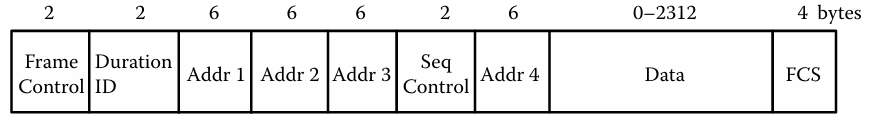

TCP/IP: Physical Layer
Layout of the Physical Layer

Protocols of the Physical Layer
At the physical layer, there are two primary protocols: wired Ethernet and wireless Ethernet.
Ethernet serves as the wired protocol for the Physical Layer.
Wired Packet Layout

Wireless Packet Layout
Physical Layer Vulnerabilities
Protocol Based
Authentication Based
Traffic Based
Have you ever seen videos on Youtube or other streaming services of Tsunamis making landfall and the wave of water wiping everything out in its path. Well with flooding, you're essentially doing the same thing, but with packets not water...even though flooding the victim's house could be a good attack strategy. An attacker essentially generates enormous amounts of broadcast traffic that it slows down the network and reduces the amount of non-spoofed traffic. This is also known as a Denial of Service or Distributed Denial of Service attack, depending upon how many devices are being used to flood the network. The good news is...there is no good news. There is no easy way to mitigate these types of attacks.